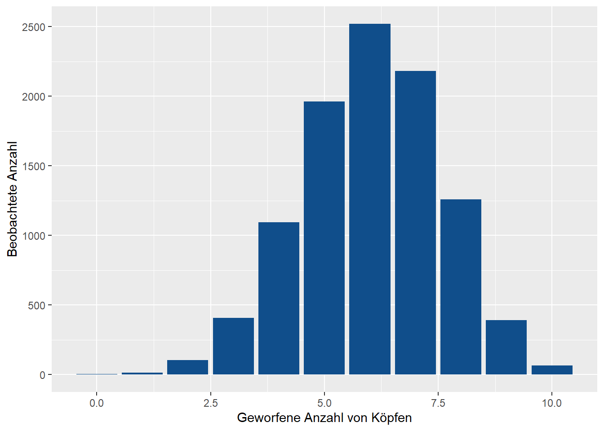
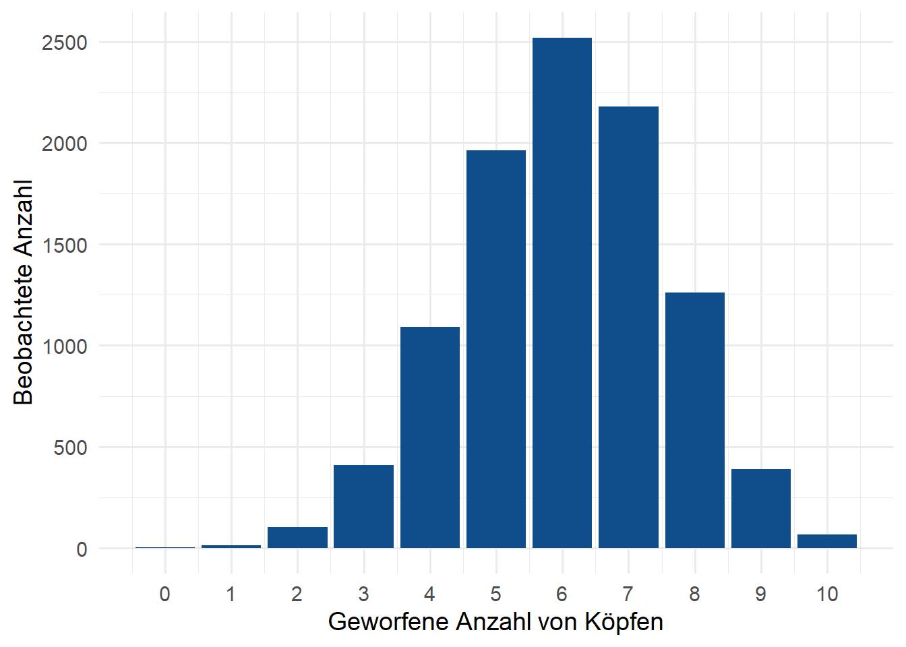
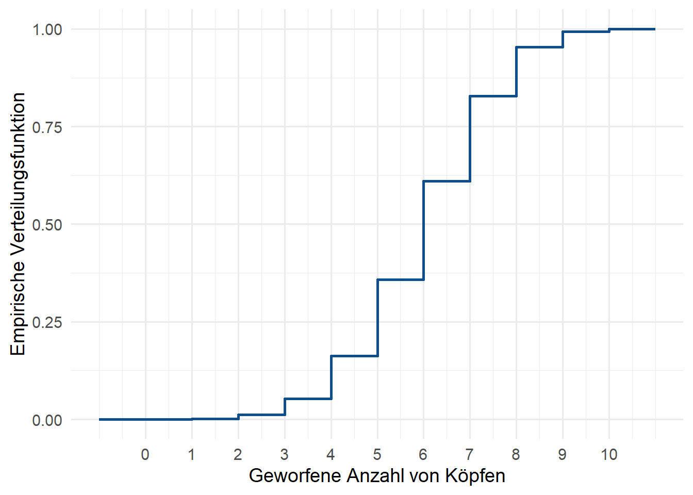
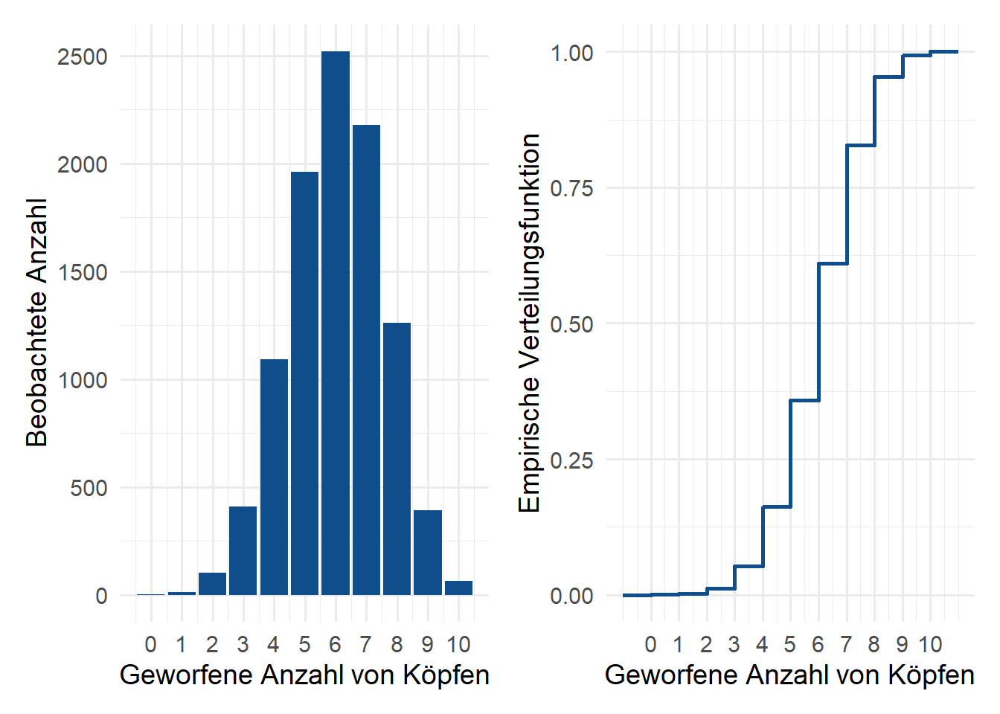
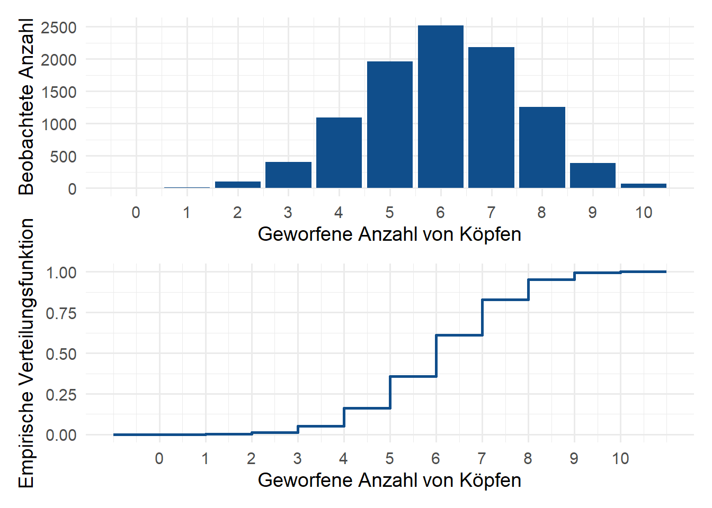

Übungsblatt 5
Münzen werfen
Zähldichte
Schreibe eine Funktion throw_coin(times, prob), die eine unfaire Münze times mal wirft und zurückgibt, wie oft die Münze Kopf gezeigt hat. Dabei wird Kopf mit einer Wahrscheinlichkeit von prob gezeigt
Nutze anschließend diese Funktion, um das folgende Zufallsexperiment 10000 mal unabhängig voneinander auszuführen:
- Eine Münze wird 10 mal geworfen
- Die Wahrscheinlichkeit, dass Kopf fällt, ist 60%
- Die Anzahl der geworfenen Köpfe wird festgehalten.
Visualisiere nun Verteilung der Funktion mithilfe eines Balkendiagramms. Dies sollte ungefähr so aussehen.
Verfeinere nun deine Visualisierung, indem du
- die x-Achse mithilfe von
scale_c_continuous()formatierst, sodass sie ganze Zahlen zeigt - das theme veränderst bspw. mit
theme_light()odertheme_minimal(). Erhöhe dabei diebase_sizein deinertheme_*Funktion, sodass die Schrift deutlich größer wird.

Verteilungsfunktion
Lass uns nun eine andere Darstellung wählen, um die Ergebnisse des Zufallsexperiments zu visualisieren.
Berechne anhand deines Vektors die empirische Verteilungsfunktion
\[ \hat{F}(x) = \frac{1}{n} \sum_{k = 1}^{n} \mathbb{1}\{ X(k) \leq x \}, \] wobei \(X(k)\), die \(k\)-te Beobachtung, \(k = 1, \ldots, n\), einer Zufallsvariable \(X\) ist für \(x \in \{-1, -0.99, -0.98, \ldots, 11\}\).
Visualisiere \(\hat{F}\) mithilfe der Funktion geom_step().

Gegenüberstellung
Wenn du deine zwei vorherigen plots in Variablen abgespeichert hast, kannst du sie ganz leicht in einer gemeinsamen Grafik anzeigen. Installiere und lade dazu das patchwork Paket. Nachdem das Paket geladen ist, kannst du Plots ganz einfach “addieren” (mit +) und “dividieren” mit /.
Nutze dies um die folgenden Grafiken zu erstellen:


Zusammenfassung
Folgende Aufgaben waren zu erledigen:
throw_coin()schreiben (1)- Bar chart für Häufigkeiten erstellen (1)
- Bar chart mit einem Theme versehen (1)
- Empirische Verteilungsfunktion visualisieren (1)
- Gegenüberstellungen erstellen (1)